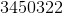
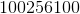

Definirea numerelor naturale
Scrierea și citirea numerelor naturale în sistemul de numeraţie zecimal
Numerele naturale se scriu cu ajutorul cifrelor.
Definiția NN1: Cifre
Se numesc cifre simbolurile .
Observații:
- Un număr poate fi alcătuit din două, trei, patru sau mai multe cifre.
- Un număr nu poate începe cu cifra
 .
.
Definiția NN2: Ordinul unui număr natural
Locul pe care îl ocupă fiecare cifră în cadrul numărului se numește ordin. De la dreapta la stânga numărului avem:
- Ordinul unităților;
- Ordinul zecilor;
- Ordinul sutelor;
- Ordinul unităților de mii;
- Ordinul zecilor de mii;
- Ordinul sutelor de mii etc.
De asemenea, tot de la dreapta spre stânga, fiecare grup de trei ordine consecutive (unul după altul) formează o clasă:
- Clasa unităților;
- Clasa miilor;
- Clasa milioanelor;
- Clasa miliardelor;
- Clasa trilioanelor etc.
Citirea unui număr se face de la stânga la dreapta prin citirea cifrelor corespunzătoare fiecărei clase, citind apoi numele clasei.
Scrierea unui număr se face tot de la stânga spre dreapta, scriind cifrele corespunzătoare ordinelor din fiecare clasă.
Zece unități de un anumit ordin formează o unitate de ordin superior.
Atunci când nu există unități de un anumit ordin se pune cifra și nu se citește.
Pentru a scrie un număr cu cifre, începem de la stânga la dreapta scriind cifrele corespunzătoare fiecărei clase, precizată în scrierea cu litere.
Scrierea unui număr oarecare:
- De două cifre: ,
 cifre.
cifre. - De trei cifre: ,
 cifre etc.
cifre etc.
Orice număr natural se poate scrie ca și sumă de produse de doi factori, în care primul factor ne spune câte unități de un anumit ordin are numărul și cel de al doilea este etc.
Exemple
- Considerăm numărul
 .
.
Citim: două sute treizeci și patru de mii șapte sute nouăzeci și cinci.
Observăm că numărul se citește de la stânga la dreapta: se citesc fiecare grup de trei cifre, după care se citește numele clasei corepunzătoare grupului.
De la dreapta la stânga, avem:
Cifra  este de ordinul unităților.
este de ordinul unităților.
Cifra  este de ordinul zecilor.
este de ordinul zecilor.
Cifra  este de ordinul sutelor.
este de ordinul sutelor.
Cifra  este de ordinal unităților de mii.
este de ordinal unităților de mii.
Cifra  este de ordinul zecilor de mii.
este de ordinul zecilor de mii.
Cifra  este de ordinul sutelor de mii.
este de ordinul sutelor de mii.
- Considerăm numărul
 .
.
Citim: o sută două milioane trei sute șaizeci și șapte de mii două sute treizeci.
Observăm că numărul se citește de la stânga la dreapta: se citesc fiecare grup de trei cifre, după care se citește numele clasei corepunzătoare grupului.
Observăm că cifra nu se citește.
De la dreapta la stânga, avem:
Cifra are ordinul  , adică este de ordinul unităților.
, adică este de ordinul unităților.
Cifra are ordinul , adică este de ordinul zecilor.
Cifra are ordinul , adică este de ordinul sutelor.
Cifra are ordinul , adică este de ordinul unităților de mii.
Cifra are ordinul , adică este de ordinul zecilor de mii.
Cifra are ordinul , adică este de ordinul sutelor de mii.
Cifra are ordinul , adică este de ordinul unităților de milioane.
Cifra are ordinul  , adică este de ordinul zecilor de milioane.
, adică este de ordinul zecilor de milioane.
Neavând unități de ordin , am folosit cifra .
Cifra are ordinul , adică este de ordinul sutelor de milioane.
- Considerăm numărul .
Citim: cinci sute trei milioane douăzeci de mii șapte sute unu.
Observăm că numărul se citește de la stânga la dreapta: se citesc fiecare grup de trei cifre, după care se citește numele clasei corepunzătoare grupului.
Cifra nu se citește.
De la dreapta la stânga, avem:
Cifra este de ordinul unităților.
Cifra este de ordinul zecilor, dar nu se citește.
Cifra este de ordinul sutelor.
Cifra este de ordinul unităților de mii, dar nu se citește.
Cifra este de ordinul zecilor de mii.
Cifra este de ordinul sutelor de mii, dar nu se citește.
Cifra este de ordinul unităților de milioane.
Cifra este de ordinul zecilor de milioane, dar nu se citește.
Cifra este de ordinul sutelor de milioane.
- Scrieți cu cifre numerele de mai jos:
- patru sute șaptezeci si doi: ;
- o mie cincizeci:
 ;
; - trei milioane patru sute cincizeci de mii trei sute douăzeci si doi: ;
- douăzeci de miliarde două sute treizeci și cinci milioane: ;
- opt trilioane patruzeci și șase miliarde trei sute:
 .
.
Observăm că în lipsa unor unități de un anumit ordin se pune cifra .
- Fie numărul
 .
.
Putem scrie:
.
- Fie numărul .
Putem scrie:

- Fie numărul .
Putem scrie:

Șirul numerelor naturale
Definiția NN3: Șirul numerelor naturale
Șirul format din  și așa mai departe se numește șirul numerelor naturale.
și așa mai departe se numește șirul numerelor naturale.
Observație:
Șirul numerelor naturale este format din numere consecutive, adică fiecare număr este mai mare cu decât cel de dinainte.
Reprezentarea numerelor naturale pe axa numerelor
Definiția NN4: Axa numerelor, originea axei și unitatea de măsură a axei
Urmărind imaginea de mai jos, se definesc următoarele noțiuni:
.png)
- Se numește axa numerelelor o dreaptă
 pe care se fixează o origine, o unitate de măsură și un sens pozitiv.
pe care se fixează o origine, o unitate de măsură și un sens pozitiv. - Originea axei numerelor se notează cu
 și îi corespunde pe axă numărul .
și îi corespunde pe axă numărul . - Segmentul se numește unitatea de măsură a axei numerelor.
Observații:
Cu ajutorul unității de măsură se poate asocia fiecărui număr natural un unic punct pe axa numerelor.
Numerele așezate sub punctele indicate cu litere se numesc coordonate sau abscise.
Exemple:
- De exemplu, dacă dorim să reprezentăm pe axă numărul , pornim din originea și numărăm unități de măsură spre dreapta. Numărului îi vom asocia un unic punct
 pe dreapta reprezentată în Definiția NN4. În acest caz, se va numi coordonata sau abscisa punctului .
pe dreapta reprezentată în Definiția NN4. În acest caz, se va numi coordonata sau abscisa punctului . - Dacă dorim să reprezentăm pe axă numărul , pornim din orginea și numărăm, de la stânga la dreapta, două unități de măsură. Acestui număr îi vom asocia unicul punct
 pe dreapta reprezentată în Definiția NN4. va fi coordonata sau abscisa punctului .
pe dreapta reprezentată în Definiția NN4. va fi coordonata sau abscisa punctului .